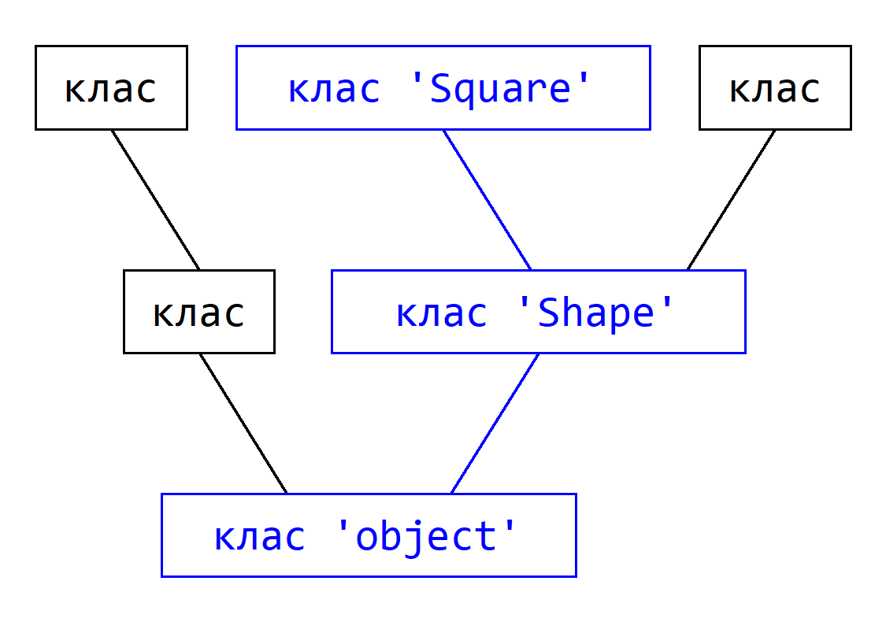

Завдання 12:
Поправити код. Створити клас Moders на базі класа Users з додатковою властивістю password. Використати __init__ та об'єкт super(). Створити інстанс moder з ім'ям "Conan", поштою "conan@company.com" та паролем "0000".
Базові класи
Творцем класів є метаклас. Він визначає які атрибути будуть передані класу. Зокрема, метаклас type серед усіх інших атрибутів додає до класа атрибут __bases__. Це такі базові класи, чиї __dict__ виступлять додатковими донорами атрибутів. А також __dict__ базових класів для цих базових класів.
Якщо метаклас дає фундаментальні атрибути, необхідні для підтримання роботи об'єкта як класа чи інстанса, то базові класи виступають донорами прикладних атрибутів - тих, задля яких, власне, і писалася програма.
Базові класи вказуються на етапі декларації класа у дужках.
# базовий клас Форма class Shape: def __init__(self, name): self.name = name def get_area(self): print(f"Площа '{self.name}' складе {self.area_cm()} см2) # клас Квадрат. Отримає name та get_area class Square(Shape): def __init__(self, name, side_cm): self.side_cm = side_cm super().__init__(name) def area_cm(self): return self.side_cm ** 2 # інстанс Квадрат square = Square("квадрат", 10) # клас Коло class Circle(Shape): def __init__(self, name, radius_cm): self.radius_cm = radius_cm super().__init__(name) def area_cm(self): return 3.14 * self.radius_cm ** 2 # інстанс Коло circle = Circle("коло", 5)
Команда return завершує роботу метода та повертає результат. Методи з return можна використовувати в ланцюгах методів, або привласнювати результат змінним, або виводити на екран.
В коді є ще одна незрозуміла команда super(). Навіщо вона? Для класа Circle можна було б при ініціалізації name використати різні варианти.
def __init__(self, name, radius_cm):
self.radius_cm = radius_cm
# можна прямо задати атрибут name
self.name = name
# можна прямо викликати функцію базового класа
Shape.__init__(self, name)
# але використовується якийсь super
super().__init__(name)
Справа в тому, що базових класів можна вказати через кому декілька. І це означає, що якщо ми будемо послідовно викликати конструктори __init__ базових класів, базових класів для тих базових класів, то деякі конструктори викликаються декілька разів. Щоб цьому запобігти і використовується об'єкт super. Він є посиланням на базові класи, причому містить алгоритм обхода базових класів, обійде кожного по разу, і не дасть запустити один атрибут декілька разів.
Абстрактні класи
В попередньому прикладі створювався базовий клас Shape, і на його базі робилися інші класи. Проблема в тому, що його метод get_area вимагає щоб у класа був обов'язково прописаний метод area_cm. Але програмист може написати, наприклад, клас rectangle, і забути дописати йому area_cm. Це помилка, і вона одразу не виявиться.
Щоб подібному запобігти, використовують абстрактні класи та методи.
from abc import ABC, abstractmethod
class Shape(ABC):
...
@abstractmethod
def area_cm(self):
pass
@abstractmethod
def perimeter_cm(self):
pass
Ця конструкція вимагає, щоб ті класи, які візьмуть Shape за базу, обов'язково прописали у себе методи area_cm та perimeter_cm. Інакше програма не запуститься і запропонує виправити помилку.